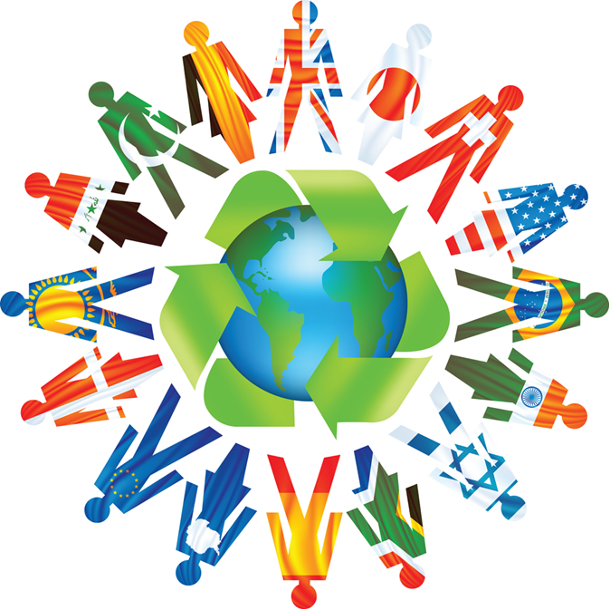
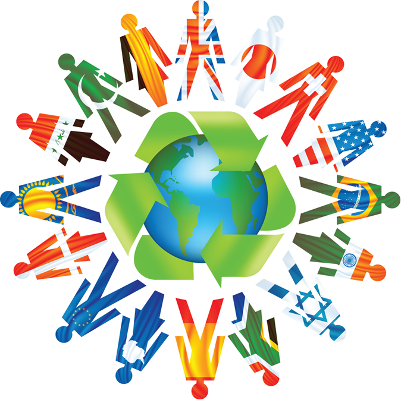

Pictures of Different Culture's
Reptile Picture's.



The United States as a multicultural nation is a work in progress. Starting at the time of the Declaration of Independence in 1776, the United States was already becoming a multicultural nation. The young republic was home to diverse Indian tribes with a population numbering in the tens of thousands. There were settlers from England, France, Germany, Holland, Poland, Scandinavia, Scotland, Spain, and other European countries.
The cultural diversity of the United States is strikingly evident when looking at religion. At the beginning of the twentieth century, few people in the United States practiced a religion other than one based on Christianity. Nearly a century later, a majority of Americans still identify themselves as Christian; however, the United States is also home to some 5 million Buddhists, 3.3 million Jews, 3 million Muslims, and 1.2 million Hindus.
Moreover, each of these groups encompasses a variety of religious practices. Americans identifying themselves as Christian, for example, include 67 million Roman Catholics, 16 million of the Southern Baptist Convention, 8 million Methodists, and 5.5 million Presbyterians. Over 2.5 million Americans are members of one of the Eastern Orthodox Christian churches. Four major branches of Judaism, two branches of Islam, and differing forms of Hinduism and Buddhism have all found significant numbers of adherents in the United States.
Link to the webiste MultiCultrualReptile Picture's.

India is one of the world's oldest civilizations. The Indian culture, often labeled as an amalgamation of several various cultures, spans across the Indian subcontinent and has been influenced and shaped by a history that is several thousand years old. Throughout the history of India, Indian culture has been heavily influenced by Dharmic religions. They have been credited with shaping much of Indian philosophy, literature, architecture, art and music. Greater India was the historical extent of Indian culture beyond the Indian subcontinent. This particularly concerns the spread of Hinduism, Buddhism, architecture, administration and writing system from India to other parts of Asia through the Silk Road by the travellers and maritime traders during the early centuries of the Common Era. To the west, Greater India overlaps with Greater Persia in the Hindu Kush and Pamir Mountains. During medieval period, Islam played significant role in shaping Indian cultural heritage[11] Over the centuries, there has been significant integration of Hindus, Jains, and Sikhs with Muslims across India
For centuries, arranged marriages have been the tradition in Indian society. Even today, the majority of Indians have their marriages planned by their parents and other respected family-members. In the past, the age of marriage was young.
The average age of marriage for women in India has increased to 21 years, according to 2011 Census of India. In 2009, about 7% of women got married before the age of 18
In some marriages the bride's family provide a dowry to the bridegroom. Traditionally, the dowry was considered a woman's share of the family wealth, since a daughter had no legal claim on her natal family's real estate. It also typically included portable valuables such as jewelery and household goods that a bride could control throughout her life.
Historically, in most families the inheritance of family estates passed down the male line. Since 1956, Indian laws treat males and females as equal in matters of inheritance without a legal will. Indians are increasingly using a legal will for inheritance and property succession, with about 20 percent using a legal will by 2004
In India, the divorce rate is low — 1% compared with about 40% in the United States.These statistics do not reflect a complete picture, though. There is a dearth of scientific surveys or studies on Indian marriages where the perspectives of both husbands and wives were solicited in-depth.
Sample surveys suggest the issues with marriages in India are similar to trends observed elsewhere in the world. The divorce rates are rising in India. Urban divorce rates are much higher. Women initiate about 80 percent of divorces in India
"Opinion is divided over what the phenomenon means: for traditionalists the rising numbers portend the breakdown of society while, for some modernists, they speak of a healthy new empowerment for women."
Recent studies suggest that Indian culture is trending away from traditional arranged marriages. Banerjee et al. surveyed 41,554 households across 33 states and union territories in India in 2005. They find that the marriage trends in India are similar to trends observed over last 40 years in China, Japan and other nations.
The study found that fewer marriages are purely arranged without consent and that the majority of surveyed Indian marriages are arranged with consent.
The percentage of self-arranged marriages (called love marriages in India) were also increasing, particularly in the urban parts of India
Islamic culture is a term primarily used in secular academia to describe the cultural practices common to historically Islamic people. The early forms of Muslim culture were predominantly Arab. With the rapid expansion of the Islamic empires, Muslim culture has influenced and assimilated much from the Persian, Caucasian, Bangladeshi, Turkic, Mongol, Chinese, Indian, Malay, Somali, Berber, Egyptian, Indonesian, Filipino, Greco-Roman Byzantine, Spanish, Sicilian, Balkanic and Western[citation needed] cultures.
Islamic culture generally includes all the practices which have developed around the religion of Islam, including Qur'anic ones such as prayer (salat) and non-Qur'anic such as divisions of the world in Islam. It includes as the Baul tradition of Bengal, and facilitated the peaceful conversion of most of Bengal. There are variations in the application of Islamic beliefs in different cultures and traditions.
Islamic culture is itself a contentious term. Muslims live in many different countries and communities, and it can be difficult to isolate points of cultural unity among Muslims, besides their adherence to the religion of Islam. Anthropologists and historians nevertheless study Islam as an aspect of, and influence on, culture in the regions where the religion is predominant.
The noted historian of Islam, Marshall Hodgson, noted the above difficulty of religious versus secular academic usage of the words "Islamic" and "Muslim" in his three-volume work, The Venture Of Islam. He proposed to resolve it by only using these terms for purely religious phenomena, and invented the term "Islamicate" to denote all cultural aspects of historically Muslim people.
However, his distinction has not been widely adopted, and confusion remains in common usage of these article.
Common interpretations of Islamic architecture include the following: The concept of Allah's infinite power is evoked by designs with repeating themes which suggest infinity. Human and animal forms are rarely depicted in decorative art as Allah's work is matchless. Foliage is a frequent motif but typically stylized or simplified for the same reason. Calligraphy is used to enhance the interior of a building by providing quotations from the Qur'an. Islamic architecture has been called the "architecture of the veil" because the beauty lies in the inner spaces (courtyards and rooms) which are not visible from the outside (street view). Use of impressive forms such as large domes, towering minarets, and large courtyards are intended to convey powe
Buddhism is a nontheistic religion or philosophy (Sanskrit: dharma; Pali: धम्म dhamma) that encompasses a variety of traditions, beliefs and spiritual practices largely based on teachings attributed to Gautama Buddha,
commonly known as the Buddha ("the awakened one"). According to Buddhist tradition, the Buddha lived and taught in the eastern part of the Indian subcontinent sometime between the 6th and 4th centuries BCE.
He is recognized by Buddhists as an awakened or enlightened teacher who shared his insights to help sentient beings end their suffering through the elimination of ignorance and craving.
Buddhists believe that this is accomplished through the direct understanding and perception of dependent origination and the Four Noble Truths.
Two major extant branches of Buddhism are generally recognized by scholars: Theravada ("The School of the Elders") and Mahayana ("The Great Vehicle"). Vajrayana, a body of teachings attributed to Indian siddhas,
may be viewed as a third branch or merely a part of Mahayana. Theravada has a widespread following in Sri Lanka and Southeast Asia. Mahayana which includes the traditions of Pure Land, Zen, Nichiren Buddhism, Shingon,
and Tiantai (Tendai) is found throughout East Asia. Tibetan Buddhism, which preserves the Vajrayana teachings of eighth century India, is practiced in regions surrounding the Himalayas, Mongolia and Kalmykia. Buddhists
number between an estimated 488 million and 535 million, making it one of the world's major religions.
In Buddhism, Karma (from Sanskrit: "action, work") is the force that drives saṃsāra—the cycle of suffering and rebirth for each being. Good, skillful deeds (Pali: "kusala") and bad, unskillful (Pāli: "akusala") actions
produce "seeds" in the mind that come to fruition either in this life or in a subsequent rebirth. The avoidance of unwholesome actions and the cultivation of positive actions is called sīla. Karma specifically refers to
those actions of body, speech or mind that spring from mental intent (cetanā),[23] and bring about a consequence or phala "fruit" or vipāka "result".
Each rebirth takes place within one of five realms according to Theravadins, or six according to other schools.
Naraka beings: those who live in one of many Narakas (Hells);
Preta: sometimes sharing some space with humans, but invisible to most people; an important variety is the hungry ghost;
Animals: sharing space with humans, but considered another type of life;
Human beings: one of the realms of rebirth in which attaining Nirvana is possible;
Asuras: variously translated as lowly deities, demons, titans, or anti-gods; not recognized by Theravada tradition as a separate realm;
Devas including Brahmās: variously translated as gods, deities, spirits, angels, or left untranslated.
The worldwide Jewish population reached a peak of 16.7 million prior to World War II, but approximately 6 million Jews were systematically murdered during the Holocaust. Since then the population has slowly risen again, and as of 2014 was estimated at 14.2 million by the North American Jewish Data Bank, or less than 0.2% of the total world population (roughly one in every 514 people). According to a report published in 2014, about 43% of all Jews reside in Israel (6.1 million), and 40% in the United States (5.7 million), with most of the remainder living in Europe (1.4 million) and Canada (0.4 million).These numbers include all those who self-identified as Jews in a socio-demographic study or were identified as such by a respondent in the same household. The exact world Jewish population, however, is difficult to measure. In addition to issues with census methodology, disputes among proponents of halakhic,secular, political, and ancestral identification factors regarding who is a Jew may affect the figure considerably depending on the source
The Roman Catholic Church, which sees full communion with the Bishop of Rome as an essential element of Catholicism. Its constituent particular churches (Western and Eastern) have distinct and separate jurisdictions, while still being "in union with Rome". Those, like the Eastern Orthodox and Oriental Orthodox, that claim unbroken apostolic succession from the early Church and identify themselves as the Catholic Church. Those, such as the Old Catholic, Anglican and some Lutheran and other denominations, that claim unbroken apostolic succession from the early Church and see themselves as a constituent part of the Church. Those who claim to be spiritual descendants of the Apostles but have no discernible institutional descent from the historic Church and normally do not refer to themselves as catholic. Those who have acknowledged a break in apostolic succession, but have restored it in order to be in full communion with bodies that have maintained the practice. Examples in this category include the Evangelical Lutheran Church in America and the Evangelical Lutheran Church in Canada vis-à-vis their Anglican and Old Catholic counterparts.
Confucianism, also known as Ruism, is a system of philosophical and "ethical-sociopolitical teachings" sometimes described as a religion.Confucianism developed during the Spring and Autumn Period from the teachings of the Chinese philosopher Confucius (551–479 BCE), who considered himself a retransmitter of Zhou values. Its metaphysical and cosmological elements developed in the Han Dynasty following the replacement of its contemporary, the more Taoistic Huang-Lao, as the of ficial ideology. More privately, Chinese emperors would still make use of the historical Realpolitik of the Chinese, termed Legalism. The disintegration of the Han in the second century CE opened the way for the soteriological doctrines of Buddhism and Taoism to dominate intellectual life at that time. Cultures and countries strongly influenced by Confucianism include mainland China, Taiwan, Hong Kong, Macau, Korea, Japan, and Vietnam, as well as various territories settled predominantly by Chinese people, such as Singapore. In the 20th century, Confucianism’s influence was greatly reduced. More recently, there have been talks of a "Confucian Revival" in the academia and the scholarly community and there has been a grassroots proliferation of various types of Confucian churches.